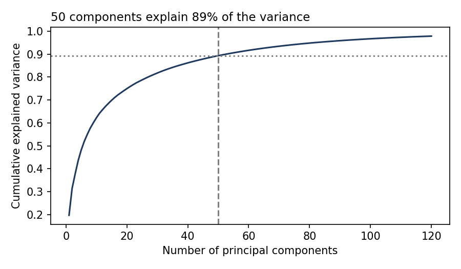

Chinese financial-text NLP pipeline (mini reproduction)
A mini version, not the original. The original work processed 100,000+ texts from Wind and broker research reports. This reproduction rebuilds the same pipeline from scratch on 297 free texts (Eastmoney broker reports and stock news for 10 large A-shares). It contains none of the original code, data or results.
The pipeline
- Crawl: broker report lists from Eastmoney's public API, report PDFs converted with pdfplumber, stock news via AkShare.
- Clean: cut disclaimers and per-page boilerplate, drop table fragments, de-duplicate.
- Represent: jieba with a finance dictionary, TF-IDF keywords,
bert-base-chineseembeddings, PCA to 90% of the variance. - Classify: sentiment (three methods compared) and KMeans topics chosen by silhouette.
- Risk features: weighted risk-word scores, 1 to 5 risk levels, monthly return volatility.
- Store: a SQLite research database with four tables, queried with pandas.
Sentiment: three methods, one test set
466 held-out labelled Chinese financial headlines.
| Method | Accuracy | Macro F1 |
|---|---|---|
| Lexicon (24 + 24 words) | 0.644 | 0.536 |
| TF-IDF + logistic regression | 0.758 | 0.730 |
| FinBERT, pre-trained | 0.764 | 0.725 |
A supervised model trained on 1,863 headlines matches a pre-trained FinBERT; the short lexicon trails both.
Does text risk predict next month's volatility?
Month-t text features against month t+1 volatility, 51 stock-months. Next month, so the text only predicts what comes after it.
| Month-t feature | Spearman corr. |
|---|---|
| Text risk score | -0.05 |
| Negative-sentence share | -0.13 |
| Sentiment | 0.03 |
| Baseline: month-t volatility | 0.37 |
Controlling for current volatility, neither text feature is significant (|t| < 1.2). On a sample this small that is an absence of evidence, not a conclusion.
What the sample taught
- Cleaning decides the topics. Broker PDFs repeat legal disclaimers, sometimes on the cover page; until those sentences were removed, words like “investment adviser” and “United States” showed up among report keywords.
- Clusters find text types, not themes. KMeans (k = 7) split earnings reviews, fund-holdings news, money-flow news, buybacks and drug approvals.
